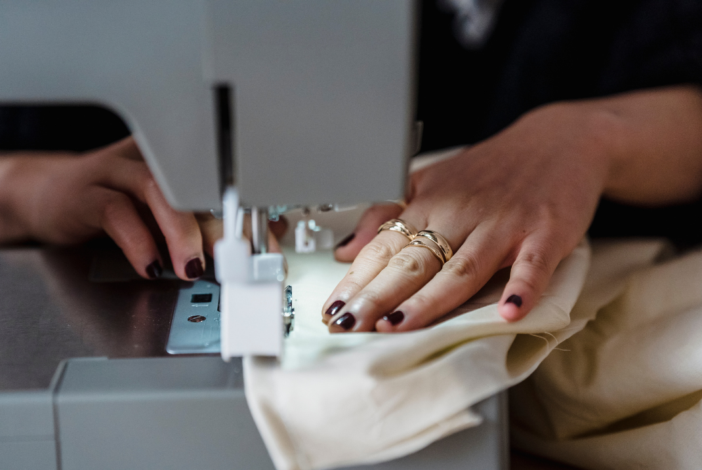

1 / 3

Example shirt to dress
2 / 3
3 / 3

Designs and embroidery can be added to cover up any stains or small holes.
Buttons can be used as buttons or to spruce up a shirt. You can use the good fabric to patch a child's knees back up. If you're short like me, all pants are too long, and either need to be hemmed or cuffed. Why not sew in a cute pattern to the cuff? Want some color poking out of the ripped jeans you bought? Go for it! Want to create an intirely new outfit from an old shirt? Please do! Get creative!